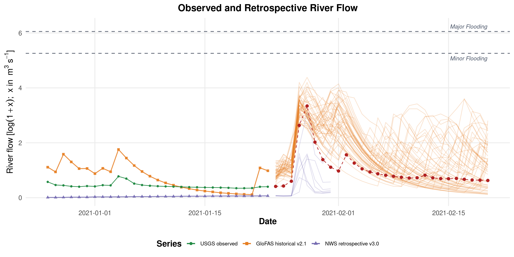
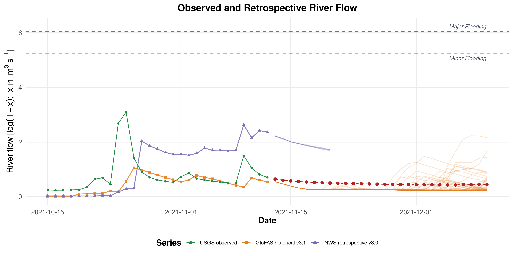
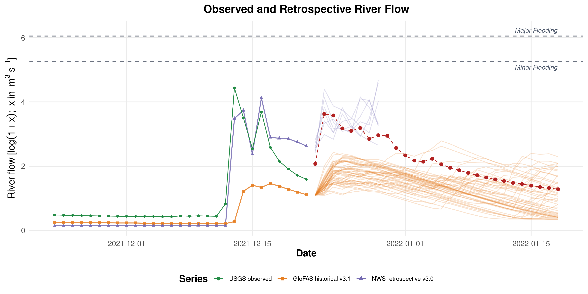
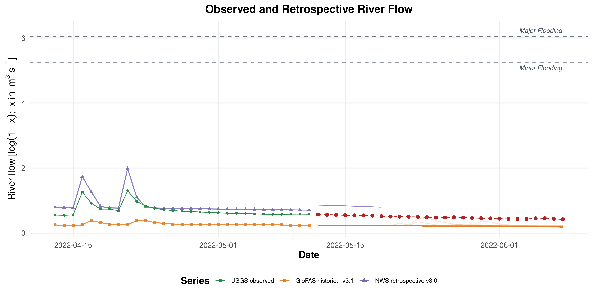
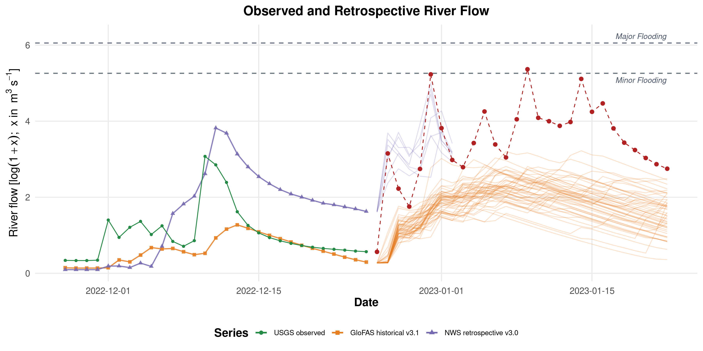

Five-Cutoff Setup/Support Review
These figures are generated from the validated cutoff-specific setup/support workflow and mirrored into the revised-article repo for review.
See INPUT_ALIGNMENT_AUDIT.md and TRANSFORM_AND_LINEAGE_AUDIT.md in this same directory for the supporting audits.
2021-01-23
Directory: 20210123_exal_m_t1
Bundle class: short_window_synth_bundle
Requested history: 1987-05-29 to 2021-01-23
Retrospective available from: 2018-02-08
Forecast window: 2020-12-26 to 2021-02-20
Flow display scale: log1p_cms
Selected-run internal scale: log_log1p_cms
NWS policy: nws_synth_retro_ens_mean keep-source policy
GloFAS policy: glofas_hist_v21_htessel_cons
Coverage audit: USGS=True, PPT=True, SOIL=True, GDPC=True, Retros=False
usgs.png
SHA256: 8885915421c41059...
Bytes: 1272134

precip_soilmoisture_climatePC1_faceted_labeled.png
SHA256: 675e56b8293a6145...
Bytes: 2057178

retrospective_log_discharge_plot_faceted.png
SHA256: 604b21538c36283b...
Bytes: 653742

forecats.png
SHA256: e823a070fde4f4cb...
Bytes: 920375

2021-11-12
Directory: 20211112_exal_m_t1
Bundle class: short_window_synth_bundle
Requested history: 1987-05-29 to 2021-11-12
Retrospective available from: 2018-11-28
Forecast window: 2021-10-15 to 2021-12-10
Flow display scale: log1p_cms
Selected-run internal scale: log_log1p_cms
NWS policy: nws_synth_retro_ens_mean keep-source policy
GloFAS policy: glofas_hist_v31_lisflood_cons
Coverage audit: USGS=True, PPT=True, SOIL=True, GDPC=True, Retros=False
usgs.png
SHA256: f56d8d9fc5cc6036...
Bytes: 1269123

precip_soilmoisture_climatePC1_faceted_labeled.png
SHA256: 5ee98f93c9fdaeb1...
Bytes: 2063130

retrospective_log_discharge_plot_faceted.png
SHA256: 37107551fef198ab...
Bytes: 639260

forecats.png
SHA256: 6b3a1971d55843ca...
Bytes: 324322

2021-12-21
Directory: 20211221_exal_m_t1
Bundle class: histfix_long_history_bundle
Requested history: 1987-05-29 to 2021-12-21
Retrospective available from: 1987-05-29
Forecast window: 2021-11-23 to 2022-01-18
Flow display scale: log1p_cms
Selected-run internal scale: log_log1p_cms
NWS policy: nws_retro_v21 with nws_retro_v30 tail fill after natural v21 coverage end
GloFAS policy: glofas_hist_v31_lisflood_cons
Coverage audit: USGS=True, PPT=True, SOIL=True, GDPC=True, Retros=True
usgs.png
SHA256: aca21f95c09c2074...
Bytes: 1273169

precip_soilmoisture_climatePC1_faceted_labeled.png
SHA256: b8312a521067b55f...
Bytes: 2068596

retrospective_log_discharge_plot_faceted.png
SHA256: b3cbe9c8927bbe2c...
Bytes: 1909283

forecats.png
SHA256: 10708eef3b61a49e...
Bytes: 584645

2022-05-11
Directory: 20220511_exal_m_t1
Bundle class: histfix_long_history_bundle
Requested history: 1987-05-29 to 2022-05-11
Retrospective available from: 1987-05-29
Forecast window: 2022-04-13 to 2022-06-08
Flow display scale: log1p_cms
Selected-run internal scale: log_log1p_cms
NWS policy: nws_retro_v21 with nws_retro_v30 tail fill after natural v21 coverage end
GloFAS policy: glofas_hist_v31_lisflood_cons
Coverage audit: USGS=True, PPT=True, SOIL=True, GDPC=True, Retros=True
usgs.png
SHA256: ab33afa7fccb440b...
Bytes: 1274628

precip_soilmoisture_climatePC1_faceted_labeled.png
SHA256: a3b38dfd5feac941...
Bytes: 2074284

retrospective_log_discharge_plot_faceted.png
SHA256: 092f0f6c634bcb65...
Bytes: 1914705

forecats.png
SHA256: 144cc08a45565a58...
Bytes: 177271

2022-12-25
Directory: 20221225_exal_m_t1
Bundle class: histfix_long_history_bundle
Requested history: 1987-05-29 to 2022-12-25
Retrospective available from: 1987-05-29
Forecast window: 2022-11-27 to 2023-01-22
Flow display scale: log1p_cms
Selected-run internal scale: log_log1p_cms
NWS policy: nws_retro_v21 with nws_retro_v30 tail fill after natural v21 coverage end
GloFAS policy: glofas_hist_v31_lisflood_cons
Coverage audit: USGS=True, PPT=True, SOIL=True, GDPC=True, Retros=True
usgs.png
SHA256: ebd36a3f2a3dcce2...
Bytes: 1272458

precip_soilmoisture_climatePC1_faceted_labeled.png
SHA256: 9ba737ad08af2e20...
Bytes: 2076786

retrospective_log_discharge_plot_faceted.png
SHA256: 8e4519e083b0ca0c...
Bytes: 1915271

forecats.png
SHA256: c3b641db219510a1...
Bytes: 693307
